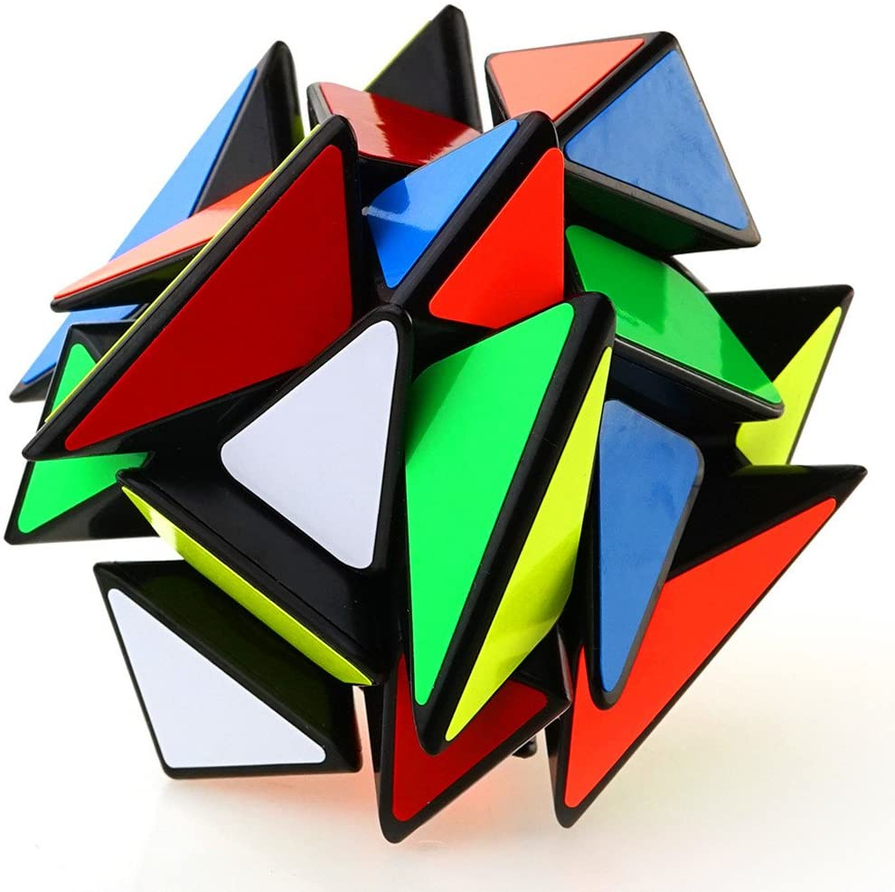
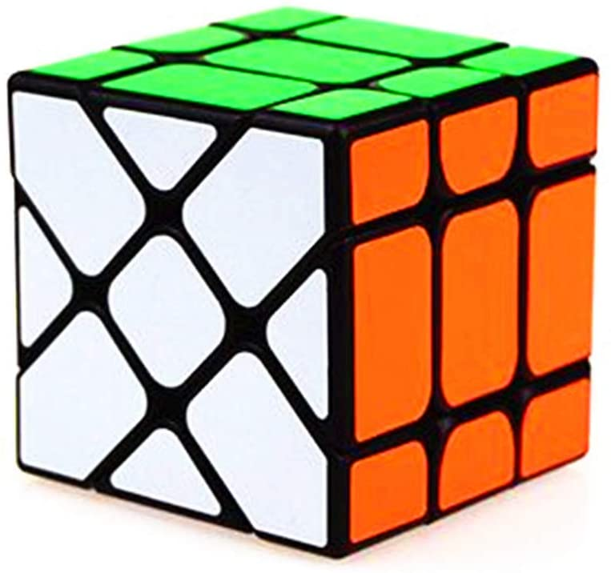

History
- Rubik's Cube was invented by Erno Rubik in 1974.
- The first puzzle was a classic 3x3x3 puzzle, originally called the 'Magic Cube'
- Rubik's Cube won the 1980 German Game of the Year special award for Best Puzzle.
After the Rubik's cube became popular, many other puzzles like the Axis Cube, Square-1 and the Megaminx
were invented.
 Axis Cube
 Fisher Cube
The Rubik's Cube is very good to develop thinking skills,
logical reasoning, perperctual reasoning etc.